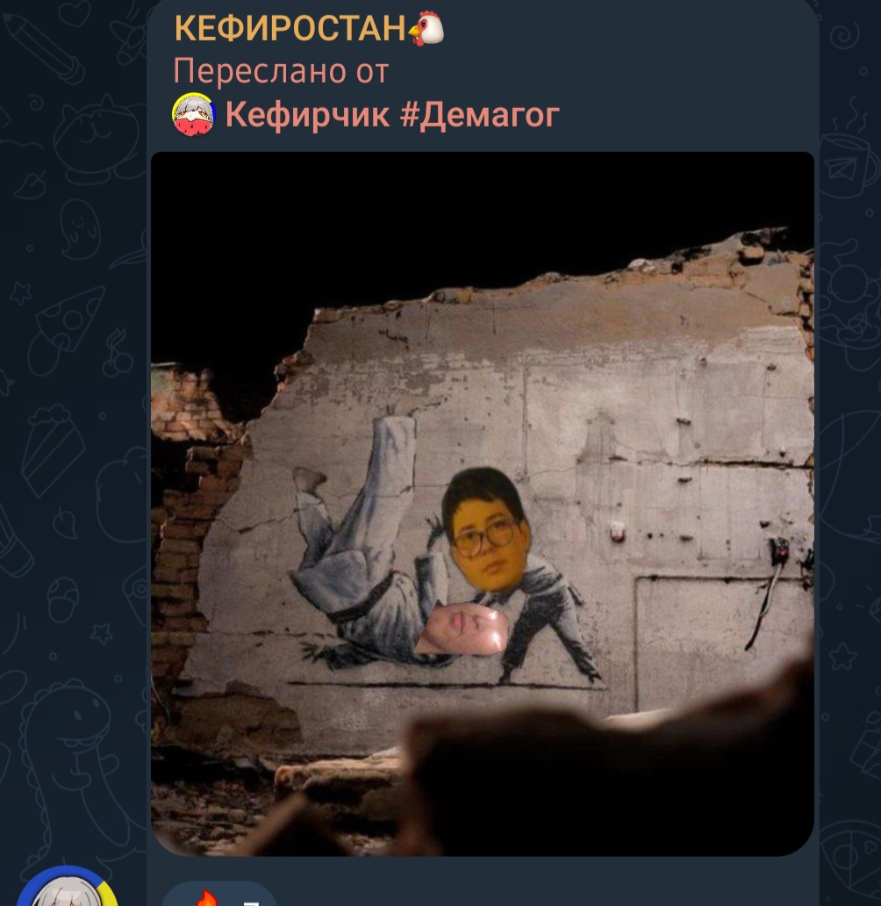

1. Он распространил целый номер человека, и даже не постыдился, он оправдался перед людьми, мол "ну это гомофоб, с ним так можно, будет больше за безопасностью следить, иии... вообще, он сам номер не скрыл". Задумайтесь, eсли он так поступает с людьми иного мнения, стоит ли верить ему? К мнению врага нужно быть нейтральным, но никак не поступать так, как поступил кефир.
Пруфы:
2. Конфессиофобия, он оскорбил православие, и православный крест, тут без объяснений почему это плохо.
Пруфы:


3. Слитие лица, он слил лицо оранжевого какого-то чела, хз кто он, и лицо Ростислава, объяснился он, мол "Ыгыгыгыгг, он гамафоп, значет пляхой", серьёзно, у него именно такая детская логика насчёт этого. Ну, кефир, покажи ты себя уже наконец, а не фотошоп тела, мол "Я гачок")))
Пруфы:
Этого уже достаточно для его хейта, поэтому предъява к аудитории: Максимально тупая аудитория школьников хомячков, тут уже по заголовку понятно, о чём будет идти речь, так что, приступаем:
1. Они схавают буквально любой его вкид, eсли схавали ссылку "pro-lgbt", и то что он типо "слил Ростислава", критического мышления у них ноль, а значит и слушать их - это плохая затея.
2. Вся аудитория кефира - палитры, мегатолераши, потому что именно их он и дефает.
3. Мегатолераши - не толерантны, потому что задатки гомофобофобии у них всё таки присутствуют, они могут бесконечно говорить про "стигму гомо", но никогда не скажут про свою стигматизацию гомофобов.